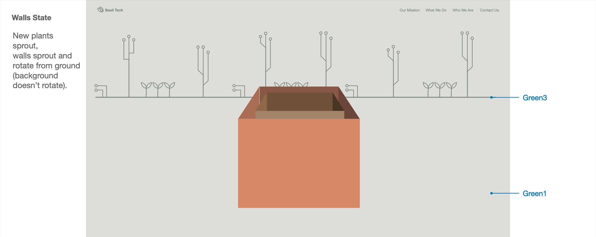
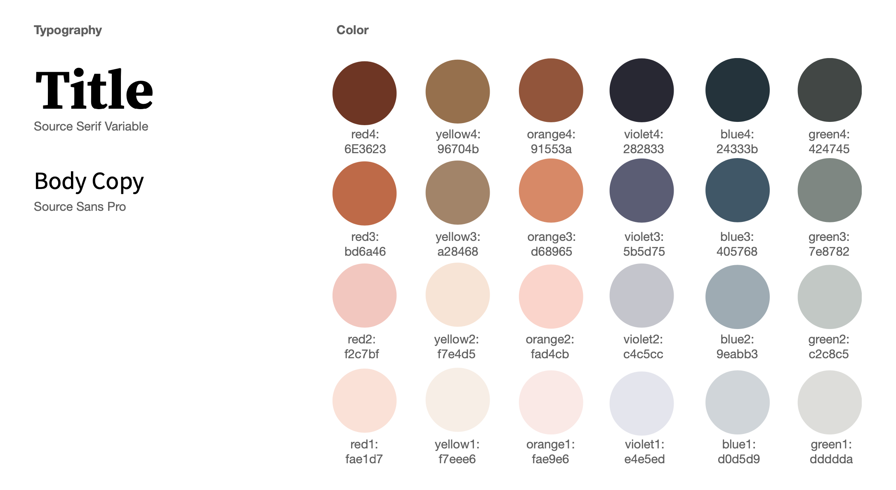
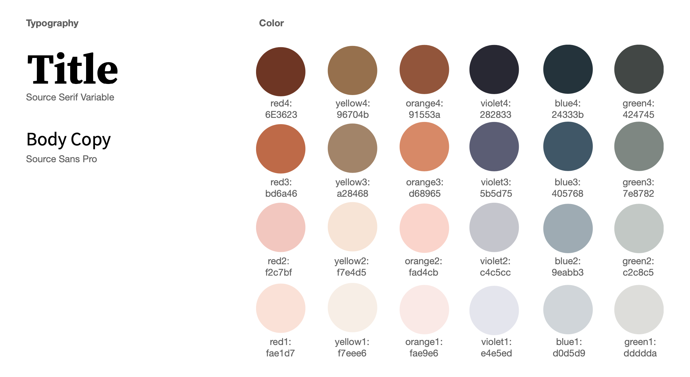

Basil: Website Redesign
Challenge
Redesign the website of non-profit tech consultant Basil Technologies.
Outcome
A visually immersive website to tell the non-profit's story.
My RolesWeb design, UX, UI
TeamMe (Design lead), 1 Developer
Background
The goal of the redesign was to demonstrate the team's capabilities in innovation and technical prowess in order to attract investors, volunteers and donors.
The current website featured a static scrolling page—plain and generic.
Concept
Round 1
Concept 1: Playing it safe, proposed a cleaner layout with a few additional points of interactive media.
Concept 2: Exploring a less conventional layout and navigation to enhance the modern-ness of the site.
Concept 3: Completely explorative, playing off the concept of the nonprofit's namesake (Bezalel from the book of Exodus) as a "builder."
The team was immediately and unamimously sold on Concept 3.
Design
Round 2
Content: Moving forward with Concept 3, I started laying out all the content and forming the "walls."
Color: I began developing color palettes following the theme of the Tabernacle built by Bezalel.
Round 3
Readability: At this point, we realized that any small text would be difficult to read at the scale and angle they were sitting in the design. I decided that for walls with text to read, the "camera" would swivel and zoom in so the text would sit squarely on screen. I gave the developer a storyboard of the intended behavior.
Round 4
Technical contraints: As we started implementing, the developer ran into technical challenges implementing interactive elements (i.e. buttons) on the 3-d walls. Thus, we pivoted to use 2-d elements for interactive portions. I created a new storyboard to show the alternating "wall" (3-d) and "page" (2-d) states.
Assets: Separately, I also created the designs of the walls, the page border designs, and the various background states.
 

Results
The website is currently live at www.basiltech.org
Public reception at the launch of the new site was incredibly positive. Furthermore, the team has seen excitement from funders and grown exponentially in the amount of volunteer interest. Whether this is directly linked to the new website remains to be seen.